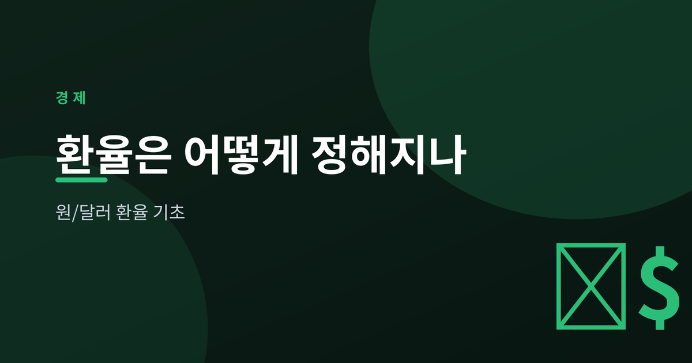
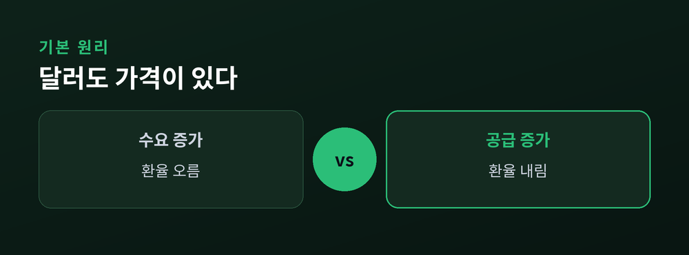
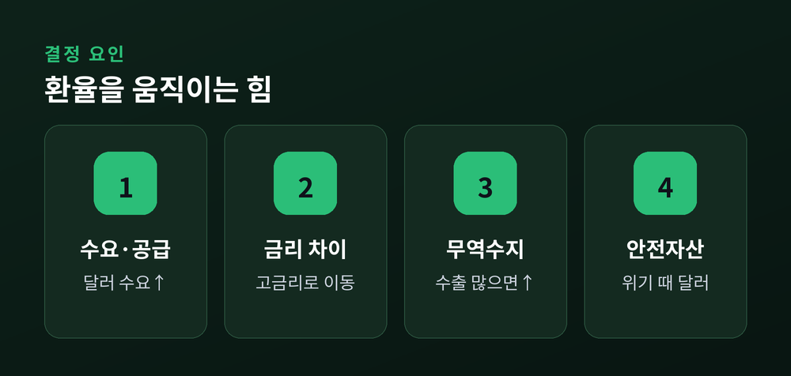
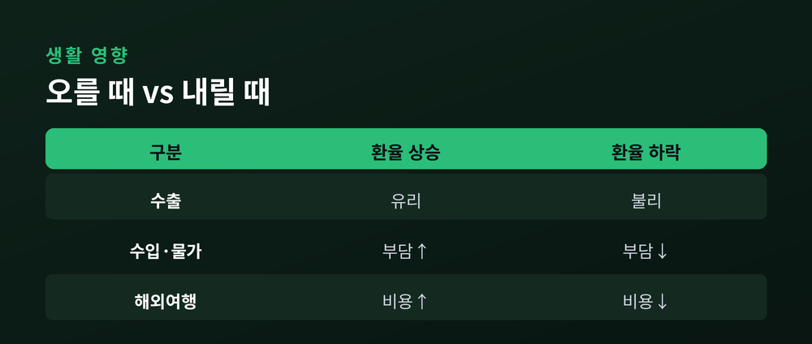

원/달러 기초

뉴스에서 "원/달러 환율 1,530원 돌파" 같은 표현을 매일 접합니다. 2026년 7월 현재 원/달러 환율은 1,530원 안팎에서 움직이고 있는데요. 그런데 이 숫자가 대체 무엇을 뜻하고, 누가 어떻게 정하는지는 의외로 모호하게 느껴집니다. 이 글에서는 환율이 결정되는 기본 원리와 그 변동이 우리 생활에 미치는 영향을 차분히 살펴보겠습니다.
환율이란 두 나라 화폐를 교환하는 비율입니다. 원/달러 환율이 1,530원이라면, 1달러를 사는 데 1,530원이 필요하다는 뜻입니다.
즉 달러도 하나의 상품처럼 가격이 있고, 그 가격을 원화로 표시한 것이 바로 환율입니다. 달러를 원하는 사람이 많아지면 값이 오르고, 적어지면 내려갑니다.

첫째는 수요와 공급입니다. 수입 대금, 해외 투자, 해외여행 등으로 달러가 필요해지면 달러 값(환율)이 오릅니다.
둘째는 금리 차이입니다. 미국 금리가 한국보다 높으면 더 높은 이자를 좇아 자금이 달러로 이동해 원화가 약해지는 경향이 있습니다.
셋째는 무역수지입니다. 수출이 수입보다 많아 달러가 국내로 들어오면 원화 가치가 오르는 힘이 생깁니다.
넷째는 물가입니다. 국내 물가가 상대적으로 많이 오르면 원화의 구매력이 떨어져 장기적으로 환율에 부담이 됩니다.
다섯째는 안전자산 선호입니다. 전쟁이나 금융 불안 같은 위기가 오면 대표적 안전자산인 달러로 돈이 몰려 환율이 급등하곤 합니다.

환율 상승(원화 약세)은 수출 기업에는 유리합니다. 같은 물건을 팔아도 원화로 환산한 매출이 늘기 때문입니다.
반대로 수입품과 원자재 가격은 비싸져 국내 물가를 밀어 올릴 수 있고, 해외여행이나 유학 비용도 늘어납니다.
| 구분 | 환율 상승(원화 약세) | 환율 하락(원화 강세) |
|---|---|---|
| 수출 | 유리 | 불리 |
| 수입·물가 | 부담 증가 | 부담 완화 |
| 해외여행 | 비용 증가 | 비용 감소 |

한국금융연구원에 따르면 원/달러 환율의 평균 기준선 자체가 최근 1,400원대로 올라선 것으로 분석됩니다. 해외투자 확대에 따른 달러 수요 증가와 글로벌 달러 강세가 맞물린 결과입니다.
환율은 여러 요인이 동시에 작용해 결정되므로, 하나의 원인만으로 방향을 단정하기는 어렵습니다.
환율은 경제의 체온계와 같습니다. 매일의 등락에 일희일비하기보다, 어떤 힘들이 배경에서 작동하는지 이해하는 편이 훨씬 도움이 됩니다. 오늘 살펴본 기본 원리만 알아도 경제 뉴스가 한결 또렷하게 보일 것입니다.
이 글은 정보 제공용이며 특정 투자를 권유하지 않습니다.